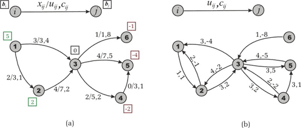
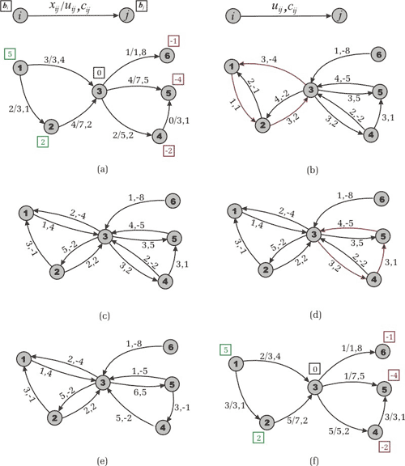
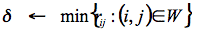
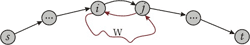
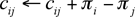
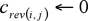
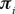
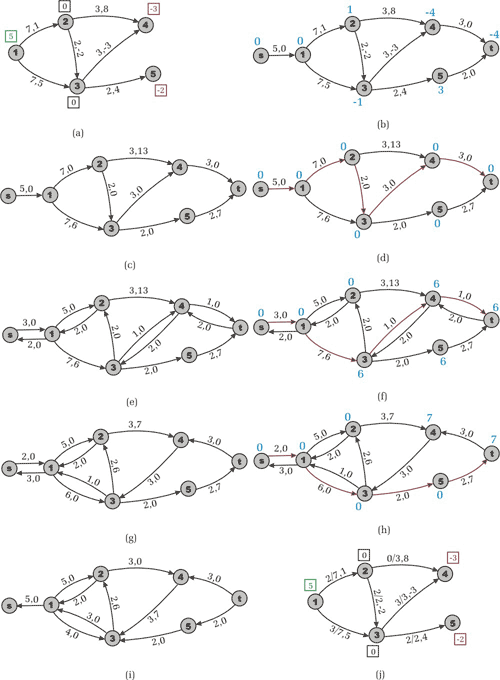
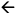
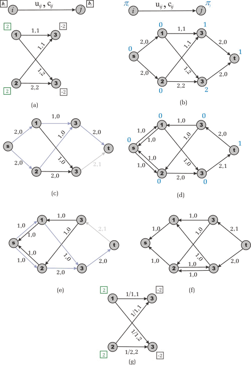

Member Count: 316,431 -
October 24, 2011
[Get Time]


 
|

In Part 1, we looked at the basics of minimum cost flow. In this section, we'll look at three algorithms that can be applied to minimum cost flow problems. Working with Residual Networks We start with the following intuitive idea. Let G be a network and x be a feasible solution of the minimum cost flow problem. Suppose that an edge (i,j) in E carries xij units of flow. We define the residual capacity of the edge (i,j) as rij = uij - xij. This means that we can send an additional rij units of flow from vertex i to vertex j. We can also cancel the existing flow xij on the arc if we send up xij units of flow from j to i over the arc (i,j). Now note that sending a unit of flow from i to j along the arc (i,j) increases the objective function by cij, while sending a unit of flow from j to i on the same arc decreases the flow cost by cij. 
Figure 1. The transportation network from Part 1. (a) A feasible solution. (b) The residual network with respect to the found feasible solution. Based on these ideas we define the residual network with respect to the given flow x as follows. Suppose we have a transportation network G = (V,E). A feasible solution x engenders a new (residual) transportation network, which we are used to defining by Gx = (V,Ex), where Ex is a set of residual edges corresponding to the feasible solution x. What is Ex? We replace each arc (i,j) in E by two arcs (i,j), (j,i): the arc (i,j) has cost cij and (residual) capacity rij = uij - xij, and the arc (j,i) has cost -cij and (residual) capacity rji=xij. Then we construct the set Ex from the new edges with a positive residual capacity. Look at Figure 1 to make sure that you understand the construction of the residual network. You can notice immediately that such a definition of the residual network has some technical difficulties. Let's sum them up:
The proof of the fact that there is a one-to-one correspondence between the original and residual networks is out the scope of this article, but you could prove all the necessary theorems as it was done within the maximum flow theory, or by reading [1]. Cycle-canceling Algorithm Theorem 1 (Solution Existence). Let G be a transportation network. Suppose that G contains no uncapacitated negative cost cycle and there exists a feasible solution of the minimum cost flow problem. Then the optimal solution exists. Proof. One can see that the minimum cost flow problem is a special case of the linear programming problem. The latter is well known to have an optimal solution if it has a feasible solution and its objective function is bounded. Evidently, if G doesn't contain an uncapacitated negative cycle then the objective function of the minimum cost flow problem is bounded from below -- therefore, the assertion of the theorem follows forthwith. We will use the following theorem without proof, because we don't want our article to be overloaded with difficult theory, but you can read the proof in [1]. Theorem 2 (Negative Cycle Optimality Conditions). Let x* be a feasible solution of a minimum cost flow problem. Then x* is an optimal solution if and only if the residual network Gx* contains no negative cost (directed) cycle. 
Figure 2. Cycle-Canceling Algorithm, example of the network from Figure 1. (a) We have a feasible solution of cost 54. (b) A negative cycle 1-2-3-1 is detected in the residual network. Its cost is -1 and capacity is 1. (c) The residual network after augmentation along the cycle. (d) Another negative cost cycle 3-4-5-3 is detected. It has cost -2 and capacity 3. (e) The residual network after augmentation. It doesn't contain negative cycles. (f) Optimal flow cost value is equal to 47. This theorem gives the cycle-canceling algorithm for solving the minimum cost flow problem. First, we use any maximum flow algorithm [3] to establish a feasible flow in the network (remember assumption 4). Then the algorithm attempts to improve the objective function by finding negative cost cycles in the residual network and augmenting the flow on these cycles. Let us specify a program in pseudo code like it is done in [1]. Cycle-Canceling 1 Establish a feasible flow x in the network 2 while ( Gx contains a negative cycle ) do 3 identify a negative cycle W 4  5 augment units of flow along the cycle W 6 update Gx How many iterations does the algorithm perform? First, note that due to assumption 1 all the data is integral. After line 1 of the program we have an integral feasible solution x. It implies the integrality of Gx. In each iteration of the cycle in line 2 the algorithm finds the minimum residual capacity in the found negative cycle. In the first iteration will be an integer. Therefore, the modified residual capacities will be integers, too. And in all subsequent iterations the residual capacities will be integers again. This reasoning implies: Theorem 3 (Integrality Property). If all edge capacities and supplies/demands on vertexes are integers, then the minimum cost flow problem always has an integer solution. The cycle-canceling algorithm works in cases when the minimum cost flow problem has an optimal solution and all the data is integral and we don't need any other assumptions. Now let us denote the maximum capacity of an arc by U and its maximum absolute value of cost by C. Suppose that m denotes the number of edges in G and n denotes the number of vertexes. For a minimum cost flow problem, the absolute value of the objective function is bounded by mCU. Any cycle canceling decreases the objective function by a strictly positive amount. Since we are assuming that all data is integral, the algorithm terminates within O(mCU) iterations. One can use O(nm) algorithm for identifying a negative cycle (for instance, Bellman-Ford's algorithm or label correcting algorithm [1]), and obtain complexity O(nm2CU) of the algorithm. Successive Shortest Path Algorithm Suppose we have a transportation network G and we have to find an optimal flow across it. As it is described in the "Finding a Solution" section we transform the network by adding two vertexes s and t (source and sink) and some edges as follows. For each node i in V with bi > 0, we add a source arc (s,i) with capacity bi and cost 0. For each node i in V with bi < 0, we add a sink arc (i,t) with capacity -bi and cost 0. Then, instead of searching for the maximum flow as usual, we send flow from s to t along the shortest path (with respect to arc costs). Next we update the residual network, find another shortest path and augment the flow again, etc. The algorithm terminates when the residual network contains no path from s to t (the flow is maximal). Since the flow is maximal, it corresponds to a feasible solution of the original minimum cost flow problem. Moreover, this solution will be optimal (and we are going to explain why). The successive shortest path algorithm can be used when G contains no negative cost cycles. Otherwise, we cannot say exactly what "the shortest path" means. Now let us justify the successive shortest path approach. When the current flow has zero value, the transportation network G doesn't contain a negative cost cycle (by hypothesis). Suppose that after some augmenting steps we have flow x and Gx still contains no negative cycles. If x is maximal then it is optimal, according to theorem 2. Otherwise, let us denote the next successfully found shortest path in Gx by P. 
Figure 3. How could a negative cycle appear in a residual network? Suppose that after augmenting the current flow x along path P a negative cost cycle W turned up in the residual network. Before augmenting there were no negative cycles. This means that there was an edge (i,j) in P (or subpath (i,…,j) in P) the reversal of which (j,i) closed cycle W after the augmentation. Evidently, we could choose another path from s to t, which goes from s to i then from i to j along edges of W then from j to t. Moreover, the cost of this path is less than the cost of P. We have a contradiction to the supposition that P is the shortest. What do we have? After the last step we have a feasible solution and the residual network contains no negative cycle. The latter is the criterion of optimality. A simple analysis shows that the algorithm performs at most O(nB) augmentations, where B is assigned to an upper bound on the largest supply of any node. Really, each augmentation strictly decreases the residual capacity of a source arc (which is equal to the supply of the corresponding node). Thanks to the integrality property it decreases by at least one unit. By using an O(nm) algorithm for finding a shortest path (there may be negative edges), we achieve an O(n2mB) complexity of the successive shortest path algorithm. Successive Shortest Path 1 Transform network G by adding source and sink 2 Initial flow x is zero 3 while ( Gx contains a path from s to t ) do 4 Find any shortest path P from s to t 5 Augment current flow x along P 6 update Gx Let us reveal the meaning of node potentials from assumption 3. As it is said within assumption 3, we are able to make all edge costs nonnegative by using, for instance, Bellman-Ford's algorithm. Since working with residual costs doesn't change shortest paths (by theorem 2, part 1) we can work with the transformed network and use Dijkstra's algorithm to find the successive shortest path more efficiently. However, we need to keep the edge costs nonnegative on each iteration -- for this purpose, we update node potentials and reduce costs right after the shortest path has been found. The reduce cost function could be written in the following manner: Reduce Cost ( ) 1 For each (i,j) in Ex do 2  3  Having found the successive shortest path we need to update node potentials. For each i in V the potential  is equal to the length of the shortest paths from s to t. After having reduced the cost of each arc, we will see that along the shortest path from s to i arcs will have zero cost while the arcs which lie out of any shortest path to any vertex will have a positive cost. That is why we assign zero cost to any reversal arc (crev(i,j)) in the Reduce Cost Procedure in line 3. The augmentation (along the found path) adds reversal arc (j,i) and due to the fact that (reduced) cost cij = 0 we make (crev(i,j)) = 0 beforehand. Why have we denoted cost of reversal arc by (crev(i,j)) instead of cji? Because the network may contain both arcs (i,j) and (j,i) (remember assumption 2 and "Working with Residual Networks" section). For other arcs (which lie out of the augmenting path) this forcible assignment does nothing, because its reversal arcs will not appear in the residual network. Now we propose a pseudo-code program: Successive Shortest Path with potentials 1 Transform network G by adding source and sink 2 Initial flow x is zero 3 Use Bellman-Ford's algorithm to establish potentials 4 Reduce Cost ( ) 5 while ( Gx contains a path from s to t ) do 6 Find any shortest path P from s to t 7 Reduce Cost ( ) 8 Augment current flow x along P 9 update Gx Before starting the cycle in line 5 we calculate node potentials and obtain all costs to be nonnegative. We use the same massif of costs c when reducing. In line 6 we use Dijkstra's algorithm to establish a shortest path with respect to the reduced costs. Then we reduce costs and augment flow along the path. After the augmentation all costs will remain nonnegative and in the next iteration Dijkstra's algorithm will work correctly. 
Figure 4. The Successive shortest Path Algorithm. (a) Initial task. (b) Node potentials are calculated after line 3 of the program. (c) Reduced costs after line 4. (d) The first augmenting path s-1-2-3-4-t of capacity 2 is found and new node potentials are calculated. (e) The residual network with reduced costs. (f) The second augmenting path s-1-3-4-t of capacity 1 is found. (g) The residual network with reduced costs. (h) The third shortest augmenting path s-1-3-5-t and new node potentials are found. (i) The residual network contains no augmenting paths. (j) The reconstructed transportation network. Optimal flow has cost 12. We use Bellman-Ford's algorithm only once to avoid negative costs on edges. It takes O(nm) time. Then O(nB) times we use Dijkstra algorithm, which takes either O(n2) (simple realization) or O(mlogn) (heap realization for sparse network, [4]) time. Summing up, we receive O(n3B) estimate working time for simple realization and O(nmBlogn) if using heap. One could even use Fibonacci Heaps to obtain O(nlogn+m) complexity of Dijkstra's shortest path algorithm; however I wouldn't recommend doing so because this case works badly in practice. Primal-Dual Algorithm Primal-Dual 1 Transform network G by adding source and sink 2 Initial flow x is zero 3 Use Bellman-Ford's algorithm to establish potentials 4 Reduce Cost ( ) 5 while ( Gx contains a path from s to t ) do 6 Calculate node potential using Dijkstra's algorithm 7 Reduce Cost ( ) 8 Establish a maximum flow y from s to t in 9 x  x + y 10 update Gx For a better illustration look at Figure 5. 
Figure 5. Primal-Dual algorithm. (a) Example network. (b) Node potentials are calculated. (c) The maximum flow in the admissible network. (d) Residual network and new node potentials. (e) The maximum flow in the admissible network. (f) Residual network with no augmenting paths. (g) The optimal solution. As mentioned above, the primal-dual algorithm sends flow along all shortest paths at once; therefore, proof of correctness is similar to the successive shortest path one. First, the primal-dual algorithm guarantees that the number of iterations doesn't exceed O(nB) as well as the successive shortest path algorithm. Moreover, since we established a maximum flow in , the residual network Gx contains no directed path from vertex s to vertex t consisting entirely of arcs of zero costs. Consequently, the distance between s and t increases by at least one unit. These observations give a bound of min{nB,nC} on the number of iterations which the primal-dual algorithm performs. Keep in mind, though, that the algorithm incurs the additional expense of solving a maximum flow problem at every iteration. However, in practice both the successive shortest path and the primal-dual algorithm work fast enough within the constraint of 50 vertexes and reasonable supply/demand values and costs. In the next section, we'll discuss some applications of the minimum cost flow problem. References |
|
|
Home |
About TopCoder |
Press Room |
Contact Us |
Careers |
Privacy |
Terms
Competitions | Cockpit |
| Copyright TopCoder, Inc. 2001-2011 |